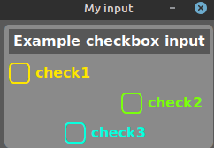

»»»»»»»»»»»»»»»»» IMPORTS INPUT «««««««««««««««««
import os
import sys
import traceback
import mttkinter as mtk
import customtkinter as ctk
from tkinter import messagebox
from CreateIndicator.Plots.mWriteReadInput import *
from CreateIndicator.Extra.collection import *
from CreateIndicator.Extra.mWidgets import *
from CreateIndicator.Extra.mConsole import console
from DataFrames.mFormatNumber import *
from DataFrames.mDataSeries import *
from SystemFiles.mWriteLog import *
from paths import PATH_Icon
»»»»»»»»»»»»»»»»»»»»»»» «««««««««««««««««««««««««
Explicação sobre os inputs
* Particularidades no posicionamento dos widgtes.
Separado em duas categorias, Individual e Duplo.
- Individual ocupa a coluna correta passada por parâmetro.
- Duplo tem em sua formação 2 widgets, um Label com outro widget.
No caso do Duplo ele vai fazer o ajuste internamente para posicionar o Label na coluna passada por parâmetro e ajustando 'coluna+1' para o outro widget.
No caso do separador vertical, o ajuste interno leva em consideração 2 posições de colunas ocupadas.
- Caso passe por parâmetro coluna 0, internamente vai ser posicionado na coluna 2.
Posicionamento: Coluna parâmetro - Coluna aplicada.
0 2
1 5
2 8
* Obs: Ao utilizar widget Individual e Separador vertical, cuidar com o posicionamento do widget para não ficar em cima do separador.
* Exemplo:
self.frame = createFrame(self.root, row = 0, column = 0, padx = 5, pady = 5, background = '#8a8a8a')
inputLabel(self.frame, row = 0, column = 0, text = 'Example', textColor = 'white', background ='#575757')
inputEntry(self.frame, row = 1, column = 0, text = 'Entry 1', width = 140, defaultValue = '', textType = 'text')
inputButton(self.frame, row = 2, column = 0, text = 'Button1', position = 'left', background = '#047e00')
createVSeparator(self.frame, row = 0, column = 0, rowspan = 3)
inputEntry(self.frame, row = 1, column = 1, text = 'Entry 2', width = 140, defaultValue = '', textType = 'text')
inputButton(self.frame, row = 2, column = 4, text = 'Button2', position = 'right', background = '#7e6b00')
Gravar valores de input
No modelo de input gerado automático tem este código:
lstInputs = readingInput( pathConfig, symbol )
defaultValues = [symbol, 'entry', '5', '1.5', 'None', '0.5', '#ffffff', '2024-01-01 00:00' ] # Examble default values, only string!
_, value1, value2, value3, value4, value5, value6, value7 = valuesInList(lstInputs, defaultValues)
Precisa garantir valores no arquivo de configuração, por isso determine corretamente a quantidade de inputs neste código.
Na lista o primeiro valor symbol é obrigatório, todos devem ser String.
Ao utilizar os valores recebido do arquivo de configuração, fazer a conversão corretamente para o tipo correspondente.
int(value2), float(value3).....
Método responsável por gravar as configurações.
button = inputButton(self.frame, 0, 0, 'Apply', position = 'full')
button.configure(command = lambda: self.writeInputs(pathConfig, symbol))
* Para acessar valores de qualquer input utilize .value()
def writeInputs(self, path, symbol):
lstInputs = [self.entry.value(),
self.intSpinBox.value(),
self.floatSpinBox.value(),
self.optionMenu.value(),
self.slider.value(),
self.color.value(),
self.dateTime.value()]
# Indicador comum
writeInput(pathFile = path, symbol = symbol, lstInputs = lstInputs)
# Para uso em histograma.
writeInput(TruisHistograme
pathFile = path,
symbol = symbol,
lstInputs = lstInputs,
isHistogram = True,
heightHistogram = self.spinHeight.value()
)
Parâmetros:
isHistogram indica que vai ser um histograma e no arquivo do indicador deve estar SEPARATE_WINDOW = True.
Não precisa gravar a altura do histograma no arquivo de configuração do indicador, marcando como True será direcionado para o arquivo compartilhado pelo projeto.
heightHistogram a altura da sessão do histograma, utilizado um spinbox como exemplo.
A altura do histograma é opcional já que tem um valor padrão definido 3.
WIDGETSFRAME
def createFrame(
window: ctk.CTk,
row: int = 0,
column: int = 0,
padx: int = 2,
pady: int = 2,
width: int = 200,
height: int = 200,
background: str = '#444444',
position: str = 'we',
colspan: int = 1
):
- Criação de layouts podendo fazer divisões de inputs com vários frames.
* Exemplo:
self.frame1 = createFrame(self.root, row = 0, column = 0, padx = 5, pady = 5, background = '#9b6565')
self.frame2 = createFrame(self.root, row = 0, column = 1, padx = 5, pady = 5, background = '#e4d949')
self.frame3 = createFrame(self.root, row = 1, column = 0, padx = 5, pady = 5, background = '#659b7a')
self.frame4 = createFrame(self.root, row = 1, column = 1, padx = 5, pady = 5, background = '#8c659b')
Input label
def inputLabel(
frame: ctk.CTkFrame,
row: int = 0,
column: int = 0,
text: str = 'Label',
width: int = 100,
textColor: str = 'black',
background: str = 'white',
textAlignm: str = 'left',
position: str = 'left' # 'left', 'right', 'center' or 'full'
):
- Widget individual, ocupa uma coluna, seu posicionamento é livre.
Input button
def inputButton(
frame: ctk.CTkFrame,
row: int = 0,
column: int = 0,
text: str = 'button',
textColor: str = 'white',
background: str = '#a70000',
position: str = 'left' # 'left', 'right', 'center' or 'full'
):
- Widget individual, ocupa uma coluna, seu posicionamento é livre.
* Exemplo:
self.frame = createFrame(self.root, row = 0, column = 0, padx = 5, pady = 5, background = '#8a8a8a')
inputLabel(self.frame, row = 0, column = 0, text = 'Example button input', textColor = 'white', background ='#575757')
inputButton(self.frame, row = 1, column = 0, text = 'Button1', position = 'left', background = '#7e6b00')
inputButton(self.frame, row = 2, column = 0, text = 'Button2', position = 'right', background = '#cc7606')
inputButton(self.frame, row = 3, column = 0, text = 'Button3', position = 'center', background = '#007e63')
inputButton(self.frame, row = 4, column = 0, text = 'Button4', position = 'full', background = '#7a007e')
Input Checkbox
def inputCheckbox(
frame: ctk.CTkFrame,
row: int = 0,
column: int = 0,
text: str = 'checkbox',
defaultValue: str = 'False', # 'String, primeira letra maiúscula True ou False'
textColor: str = 'white',
background: str = 'transparent',
position: str = 'left' # 'left', 'right' or 'center'
):
- Widget individual, ocupa uma coluna, seu posicionamento é livre.
* Exemplo:
self.frame = createFrame(self.root, row = 0, column = 0, padx = 5, pady = 5, background = '#8a8a8a')
inputLabel(self.frame, row = 0, column = 0, text = 'Example checkbox input', textColor = 'white', background ='#575757')
inputCheckbox(self.frame, row = 1, column = 0, text = 'check1', textColor = '#ffe600', position = 'left')
inputCheckbox(self.frame, row = 2, column = 0, text = 'check2', textColor = '#7aff0d', position = 'right')
inputCheckbox(self.frame, row = 3, column = 0, text = 'check3', textColor = '#07ffde', position = 'center')

 Gravar valores de input
No modelo de input gerado automático tem este código:
Gravar valores de input
No modelo de input gerado automático tem este código: